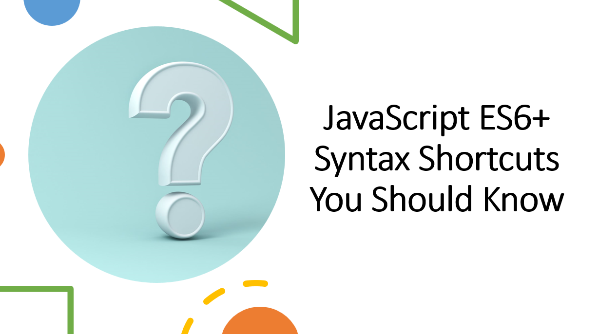

Introduction
ES6 introduced many new features and syntax shortcuts that make JavaScript code more readable and efficient. These modern language enhancements are now widely used and essential for modern web development.
In this blog post, we will explore some of the most useful ES6+ syntax shortcuts that you should know. By incorporating these shortcuts into your code, you can write cleaner, more concise, and maintainable JavaScript.
Suggested Tutorials 📑:
Let's get started!
1. Destructuring
Destructuring is a convenient way to extract multiple values from data stored in objects and arrays. It allows you to extract data from arrays and objects into distinct variables.
1.1 Destructuring Arrays
Consider the following array:
const numbers = [1, 2, 3, 4, 5];
To extract the first two elements of the array, you can use the following syntax:
const [first, second] = numbers;
console.log(first);
console.log(second);
You can also use the rest operator to extract the remaining elements of the array:
const [first, second, ...rest] = numbers;
console.log(first);
console.log(second);
console.log(rest);
1.2 Destructuring Objects
Consider the following object:
const person = {
firstName: "John",
lastName: "Doe",
age: 30,
};
To extract the firstName and lastName properties of the object, you can use the following syntax:
const { firstName, lastName } = person;
console.log(firstName);
console.log(lastName);
You can also use the rest operator to extract the remaining properties of the object:
const { firstName, lastName, ...rest } = person;
console.log(firstName);
console.log(lastName);
console.log(rest);
Suggested Tutorials 📑:
2. Template Literals
Template literals are a convenient way to create strings. They allow you to embed expressions in strings without having to use concatenation.
Consider the following example:
const firstName = "John";
const lastName = "Doe";
const fullName = firstName + " " + lastName;
console.log(fullName);
Using template literals, you can rewrite the above example as follows:
const firstName = "John";
const lastName = "Doe";
const fullName = `${firstName} ${lastName}`;
console.log(fullName);
3. Arrow Functions
Arrow functions are a convenient way to write anonymous functions. They are more concise than traditional function expressions and do not bind their own this value.
Consider the following example:
const numbers = [1, 2, 3, 4, 5];
const evenNumbers = numbers.filter(function (number) {
return number % 2 === 0;
});
console.log(evenNumbers);
Using arrow functions, you can rewrite the above example as follows:
const numbers = [1, 2, 3, 4, 5];
const evenNumbers = numbers.filter((number) => number % 2 === 0);
console.log(evenNumbers);
Suggested Tutorials 📑:
4. Default Parameters
Default parameters allow you to specify default values for function parameters. If a value is not provided for a parameter, the default value will be used instead.
Consider the following example:
function greet(name) {
return `Hello, ${name}!`;
}
console.log(greet("John"));
console.log(greet());
Using default parameters, you can rewrite the above example as follows:
function greet(name = "World") {
return `Hello, ${name}!`;
}
console.log(greet("John"));
console.log(greet());
5. Object Property Shorthand
Object property shorthand allows you to create objects without having to explicitly specify the property names. If the property name is the same as the variable name, you can omit the property name.
Consider the following example:
const firstName = "John";
const lastName = "Doe";
const person = {
firstName: firstName,
lastName: lastName,
};
console.log(person);
Using object property shorthand, you can rewrite the above example as follows:
const firstName = "John";
const lastName = "Doe";
const person = {
firstName,
lastName,
};
console.log(person);
Suggested Tutorials 📑:
6. Object Destructuring
Object destructuring allows you to extract properties from objects and store them in variables. It is a convenient way to extract multiple properties from objects into distinct variables.
Consider the following example:
const person = {
firstName: "John",
lastName: "Doe",
age: 30,
};
const firstName = person.firstName;
const lastName = person.lastName;
console.log(firstName);
console.log(lastName);
Using object destructuring, you can rewrite the above example as follows:
const person = {
firstName: "John",
lastName: "Doe",
age: 30,
};
const { firstName, lastName } = person;
console.log(firstName);
console.log(lastName);
7. Spread Operator
The spread operator allows you to expand an iterable object into individual elements. It is a convenient way to copy arrays and objects.
Consider the following example:
const numbers = [1, 2, 3, 4, 5];
const copy = numbers.slice();
console.log(copy);
Using the spread operator, you can rewrite the above example as follows:
const numbers = [1, 2, 3, 4, 5];
const copy = [...numbers];
console.log(copy);
8. Rest Operator
The rest operator allows you to represent an indefinite number of elements as an array. It is a convenient way to pass an indefinite number of arguments to a function.
Consider the following example:
function sum(...numbers) {
return numbers.reduce((sum, number) => sum + number, 0);
}
console.log(sum(1, 2, 3, 4, 5));
Suggested Tutorials 📑:
9. Classes
Classes are a convenient way to define blueprints for objects. They encapsulate data with code to work on that data. Classes in JavaScript are built on prototypes but also have some syntax and semantics that are not shared with ES5 classalike semantics.
Consider the following example:
class Person {
constructor(firstName, lastName) {
this.firstName = firstName;
this.lastName = lastName;
}
greet() {
return `Hello, ${this.firstName} ${this.lastName}!`;
}
}
const john = new Person("John", "Doe");
console.log(john.greet());
10. Inheritance
Inheritance is a mechanism that allows you to create new classes from existing classes. It is a convenient way to reuse existing code without having to duplicate it.
Consider the following example:
class Person {
constructor(firstName, lastName) {
this.firstName = firstName;
this.lastName = lastName;
}
greet() {
return `Hello, ${this.firstName} ${this.lastName}!`;
}
}
class Student extends Person {
constructor(firstName, lastName, course) {
super(firstName, lastName);
this.course = course;
}
enroll() {
return `${this.firstName} is enrolled in ${this.course}.`;
}
}
const john = new Student("John", "Doe", "Computer Science");
console.log(john.greet());
console.log(john.enroll());
Suggested Tutorials 📑:
11. Modules
Modules are a way to split your code into multiple files. Each file is treated as a separate module and can export one or more values using the export keyword. These values can then be imported into other modules using the import keyword.
Consider the following example:
export const add = (x, y) => x + y;
export const subtract = (x, y) => x - y;
import { add, subtract } from "./math.js";
console.log(add(1, 2));
console.log(subtract(1, 2));
Promises are a convenient way to represent asynchronous computations in JavaScript. They allow you to write asynchronous code in a more synchronous fashion.
Consider the following example:
const wait = (delay) => new Promise((resolve) => setTimeout(resolve, delay));
wait(1000)
.then(() => console.log("Hello!"))
.catch(() => console.log("Error!"))
.finally(() => console.log("Done!"));
Async/await is a new way to write asynchronous code. It is built on top of promises and allows you to write asynchronous code that looks synchronous.
Consider the following example:
const wait = (delay) => new Promise((resolve) => setTimeout(resolve, delay));
const main = async () => {
try {
await wait(1000);
console.log("Hello!");
} catch (err) {
console.log("Error!");
} finally {
console.log("Done!");
}
};
main();
Conclusion
In this article, we have looked at some of the most important features introduced in ES6. We have also looked at how these features can be used to write cleaner and more concise code. I hope you have found this article useful and that it has helped you understand the new features introduced in ES6.
Suggested Tutorials 📑:
We hope you enjoyed this article. If you have any questions or feedback, please feel free to reach out to us on Twitter.
Happy Coding! 😇